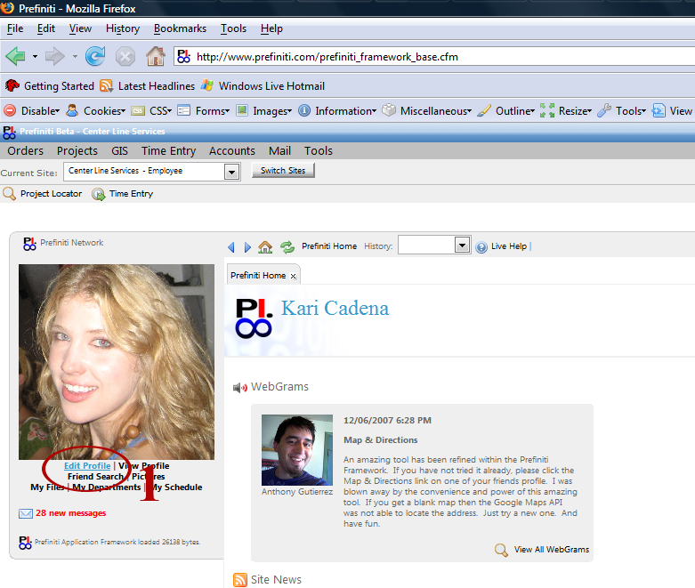
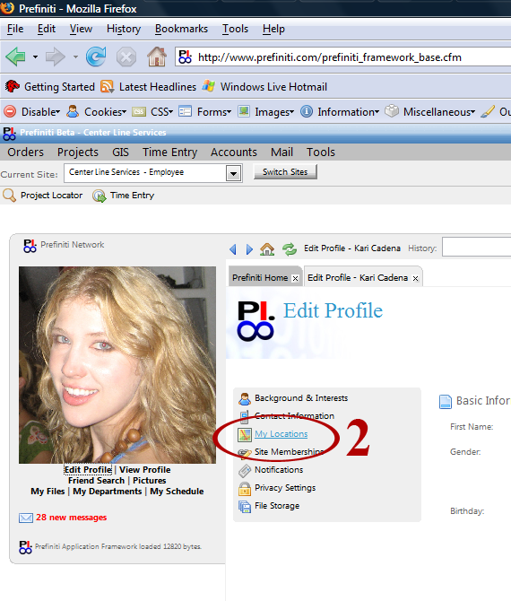
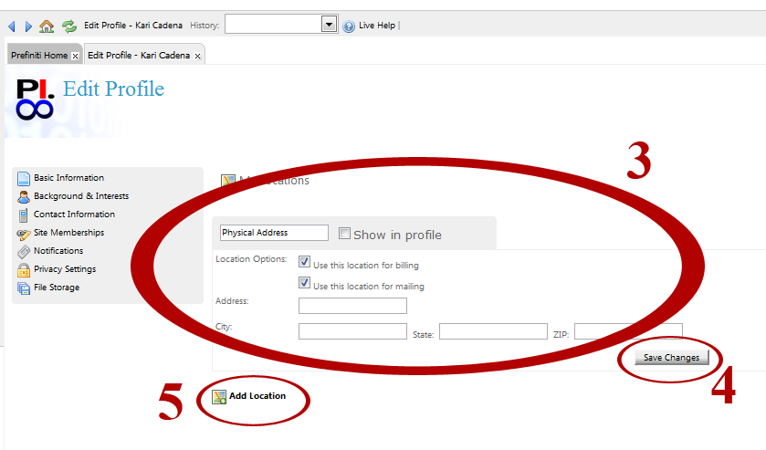

Click on 'Edit Profile' as shown in picture (step 1). A new 'Edit Profile' tab will open.

Click on 'My Locations' (step 2).

Fill out the form that appears (step 3). In the field that says 'Physical Address' you can rename the address (i.e. Home, Business, etc.). By selecting the 'Show in Profile' option, you are making your address available for your friends and associated businesses to see on your profile. It is not available to the general public network. Select the option 'Use this location for billing' if this is the address to which you would like to be billed by companies you do business with. Select the option 'Use this location for mailing' if this is the address to which you would like to receive mail. When finished entering your address, click 'Save' (step 4). If you would like to add additional locations to your profile, click 'Add Location' (step 5) and repeat steps 3 and 4 in the form that appears.
